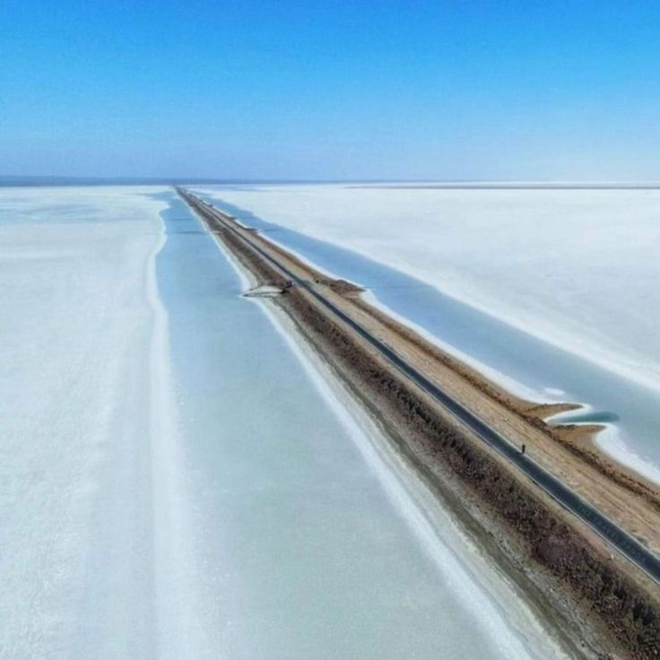
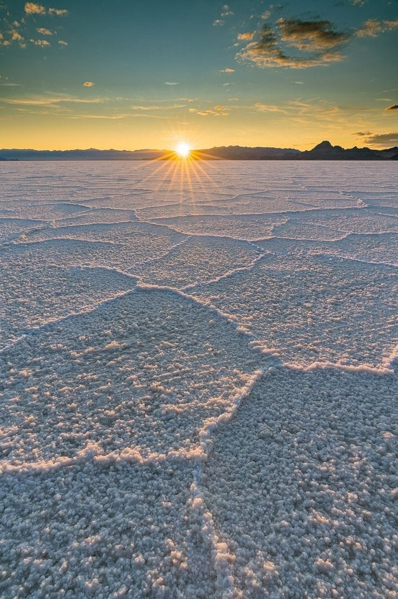
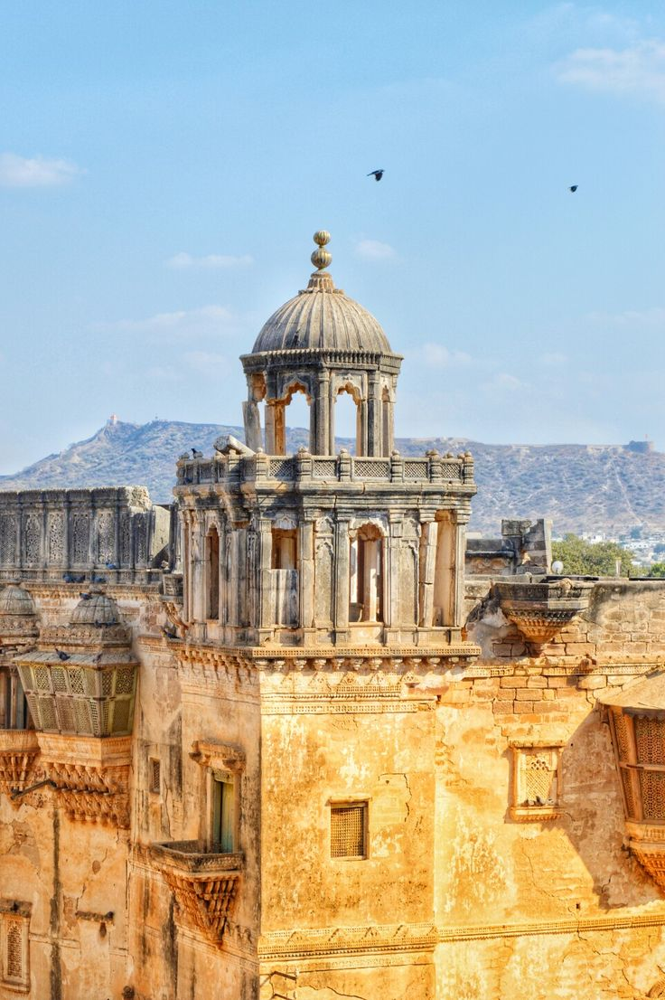
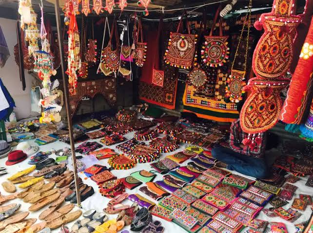
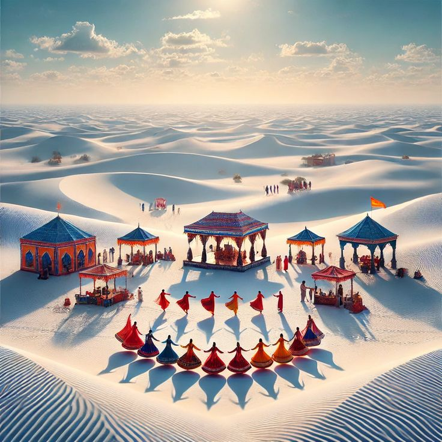
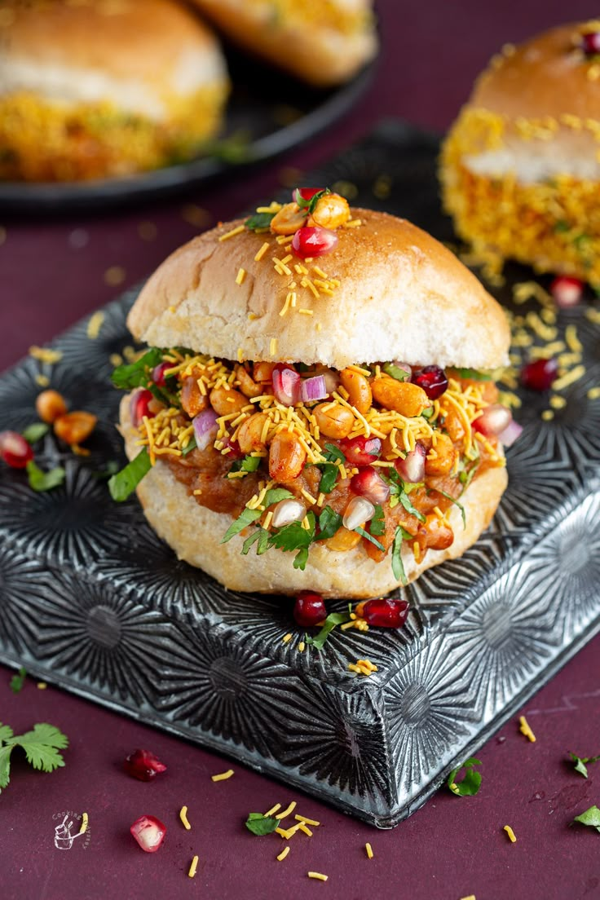

Kutch Over_all View
Kutch is a unique region of Gujarat, famous for its vast white desert, colorful handicrafts, and vibrant culture. The district is known for its resilience, artistry, and the spectacular Rann of Kutch festival that attracts visitors from across the world.
Peaceful Nature Spot (White Rann)
The White Rann is a breathtaking salt desert that glows under the moonlight. It is one of the most iconic natural wonders of India, offering visitors a surreal experience of endless white landscapes.


Historical Place (Aina Mahal)
Aina Mahal, located in Bhuj, is a beautiful palace built in the 18th century. Known as the “Palace of Mirrors,” it showcases intricate glasswork, carvings, and artifacts that reflect the grandeur of Kutch’s royal heritage.
Local Market (Bhujodi Handicraft Market)
Bhujodi Market is a hub of traditional Kutch handicrafts, textiles, and embroidery. Visitors can shop for handwoven shawls, bandhani fabrics, and souvenirs that represent the artistry of local craftsmen.


Famous Festival (Rann Utsav)
Rann Utsav is a cultural extravaganza held annually in the White Rann. It features folk music, dance, handicrafts, and adventure activities, making it a celebration of Kutch’s vibrant spirit.
Famous Local Food Items (Street Food → Dabeli)
Dabeli is a famous street food from Kutch, made with spiced potato filling in a bun, garnished with pomegranate and peanuts. It is a delicious snack that has gained popularity across India.
